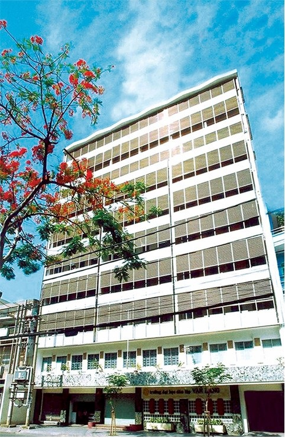

CÁC CƠ SỞ HIỆN TẠI

CƠ SỞ 1:

Đây là bài tập nhóm cuối kì của nhóm chúng tôi ở lớp Nhập môn Công Nghệ Thông Tin - Giảng viên Bùi Minh Phụng
Tìm hiểu thêm về nhómĐại học Văn Lang được thành lập theo quyết định số 71/TTg năm 1995 của Thủ tướng Chính phủ. Đây là trường đại học đa ngành, đào tạo theo định hướng ứng dụng.
Nhà trường tạo ra những trải nghiệm học tập mang tính nhân văn và nuôi dưỡng các giá trị đạo đức ở người học; Nhà trường gìn giữ và lồng ghép những giá trị truyền thống – đạo đức, ý chí, sáng tạo – vào các chương trình đào tạo; Nhà trường khuyến khích người học sống tốt và trở thành công dân toàn cầu, góp phần làm cho thế giới trở thành một nơi tốt đẹp hơn.
Nhà trường tin tưởng mạnh mẽ vào sự phát triển toàn diện của người học; Nhà trường tạo điều kiện để người học khám phá và khai mở tất cả tiềm năng của bản thân; Nhà trường trang bị cho người học kỹ năng học tập, lối suy nghĩ sáng tạo, tinh thần khởi nghiệp, kỹ năng lãnh đạo và các kỹ năng sống; Để hỗ trợ tốt cho việc này, Nhà trường sử dụng và tích hợp công nghệ tiên tiến vào các hoạt động đào tạo; Nhà trường chuẩn bị cho người học những kiến thức và kỹ năng để phát triển sự nghiệp và giúp người học có một cuộc sống ý nghĩa, hiệu quả, thỏa mãn và mang lại ảnh hưởng tích cực
Nhà trường kỳ vọng người học mang lại những ảnh hưởng tích cực truyền cảm hứng cho cộng đồng; Nhà trường tạo nhiều cơ hội để người học thực hiện vai trò lãnh đạo và đóng góp hữu ích cho cộng đồng địa phương và quốc tế; Sau cùng, thông qua VLU, chúng tôi mang những tinh hoa của con người và đất nước Việt Nam ra thế giới.